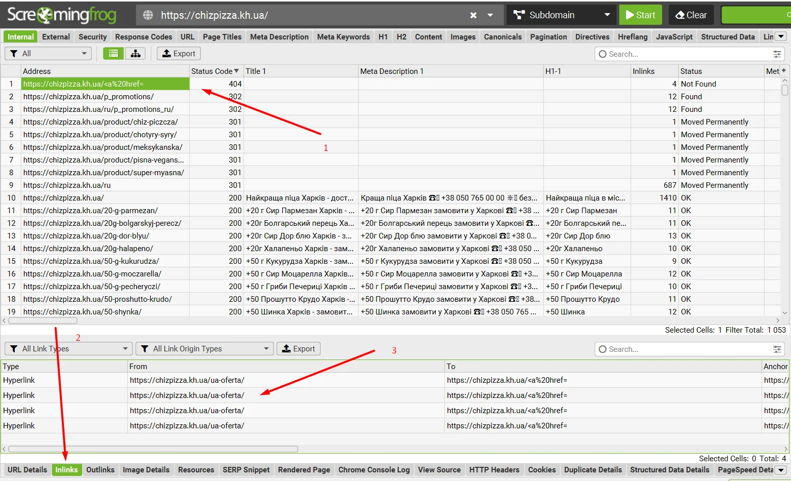
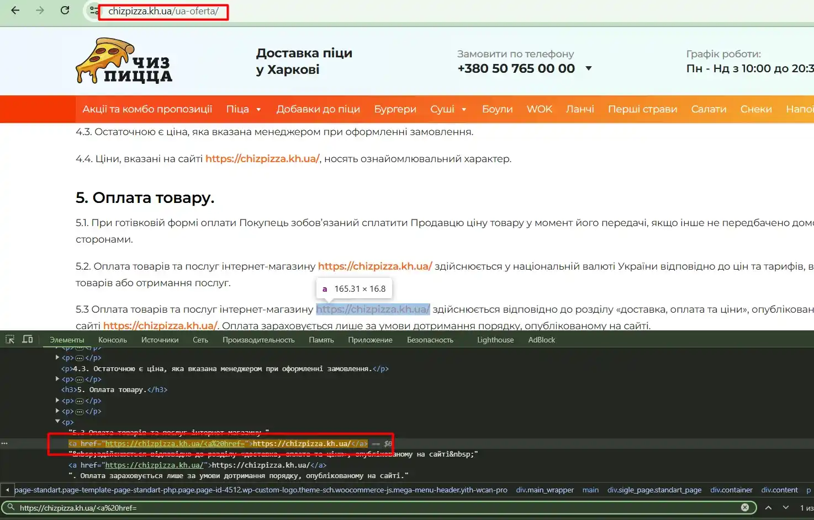
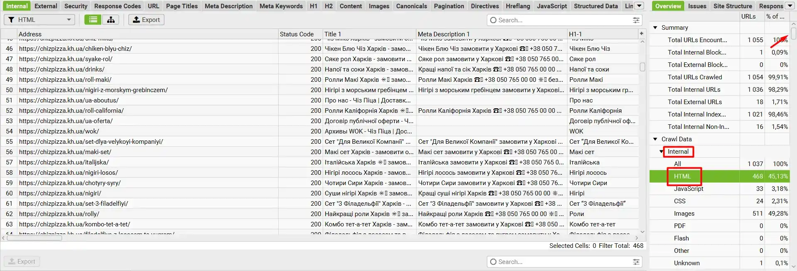

SCREAMING FROG ДЛЯ НАЧИНАЮЩИХ
В этой статье я собрал краткий мануал для начинающих SEО-специалистов, начинающих заниматься оптимизацией, в которой им поможет Screaming Frog. Я опишу самые главные функции, которые необходимы для анализа сайта, без лишней воды и ненужных функций.
Как сканировать сайт?
Итак, начнем сканировать сайт. Все очень просто, вставляем домен в верхнюю строчку в программе и нажимаем кнопку Start.

Бывают случаи, что сайт закрыл сканирование для таких программ, как Скриминг Фрог. В таком случае, в верхней панели мы нажимаем Configuration > User-Agent и в открывшемся окне выбираем Google (Desktop) и жмем OK. После этого нажимаем Start.

Далее, ждем, пока программа отсканирует весь сайт. Если сайт небольшой, то это занимает около 5 минут. Сканирование крупного сайта занимает 20-30 минут, по этому в конце сохраняйте проект на своем компьютере, что бы не тратить большое количество времени в следующий раз.
Что делать после сканирования сайта?
Мы отсканировали сайт и видим перед собой много панелей, столбцов и прочее. Сейчас я объясню самые нужные параметры, которые нам нужны.

Первое, это большая таблица с данными о ссылках, в ней мы можем найти самую необходимую информацию - код ответа (200, 300, 400, 500), title, description, H1. Столбцы можно выставлять в любом порядке, можете выставить, как у меня на предыдущем скриншоте. Также, нажав на название столбца мы можем отсортировать данные от А до Я, от Я до А, от большего к меньшему, от меньшего к большему.

На прошлом скриншоте я отсортировал Status Code по убыванию, и вы могли заметить, что на нашем сайте есть 404 (страница удалена или страница с ошибкой), 302 (временный редирект) и 301 (постоянный редирект) ссылки. И тут самый главный вопрос.
Где на сайте находится нужная ссылка?
Чтобы найти необходимую ссылку в Screaming Frog необходимо нажать на ссылку и в нижней панели выбрать Inlinks. Первый столбец - это страница, на которой находится битая ссылка.
Вот так работает это на практике. То есть мы нашли страницу у которой в контенте (в тексте) есть битая ссылка 404.
Как отсортировать только страницы?
По предыдущим скриншотам вы заметили, что программа просканировала абсолютно все файлы, но нам необходима информация только о страницах сайта. Для этого нам понадобится боковая панель сайта, в Internal выбираем HTML и у нас сортируются только страницы.
